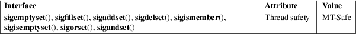

sigemptyset, sigfillset, sigaddset, sigdelset, sigismember − POSIX signal set operations
Standard C library (libc, −lc)
#include <signal.h>
int
sigemptyset(sigset_t *set);
int sigfillset(sigset_t *set);
int
sigaddset(sigset_t *set, int
signum);
int sigdelset(sigset_t *set, int
signum);
int sigismember(const sigset_t *set, int signum);
Feature Test Macro Requirements for glibc (see feature_test_macros(7)):
sigemptyset(),
sigfillset(), sigaddset(), sigdelset(),
sigismember():
_POSIX_C_SOURCE
These functions allow the manipulation of POSIX signal sets.
sigemptyset() initializes the signal set given by set to empty, with all signals excluded from the set.
sigfillset() initializes set to full, including all signals.
sigaddset() and sigdelset() add and delete respectively signal signum from set.
sigismember() tests whether signum is a member of set.
Objects of type sigset_t must be initialized by a call to either sigemptyset() or sigfillset() before being passed to the functions sigaddset(), sigdelset(), and sigismember() or the additional glibc functions described below (sigisemptyset(), sigandset(), and sigorset()). The results are undefined if this is not done.
sigemptyset(), sigfillset(), sigaddset(), and sigdelset() return 0 on success and −1 on error.
sigismember() returns 1 if signum is a member of set, 0 if signum is not a member, and −1 on error.
On error, these functions set errno to indicate the error.
|
EINVAL |
signum is not a valid signal. |
For an explanation of the terms used in this section, see attributes(7).

GNU
If the _GNU_SOURCE feature test macro is defined,
then <signal.h> exposes three other functions
for manipulating signal sets:
int
sigisemptyset(const sigset_t *set);
int sigorset(sigset_t *dest, const sigset_t
*left,
const sigset_t *right);
int sigandset(sigset_t *dest, const sigset_t
*left,
const sigset_t *right);
sigisemptyset() returns 1 if set contains no signals, and 0 otherwise.
sigorset() places the union of the sets left and right in dest. sigandset() places the intersection of the sets left and right in dest. Both functions return 0 on success, and −1 on failure.
These functions are nonstandard (a few other systems provide similar functions) and their use should be avoided in portable applications.
POSIX.1-2008.
POSIX.1-2001.
When creating a filled signal set, the glibc sigfillset() function does not include the two real-time signals used internally by the NPTL threading implementation. See nptl(7) for details.
sigaction(2), sigpending(2), sigprocmask(2), sigsuspend(2)